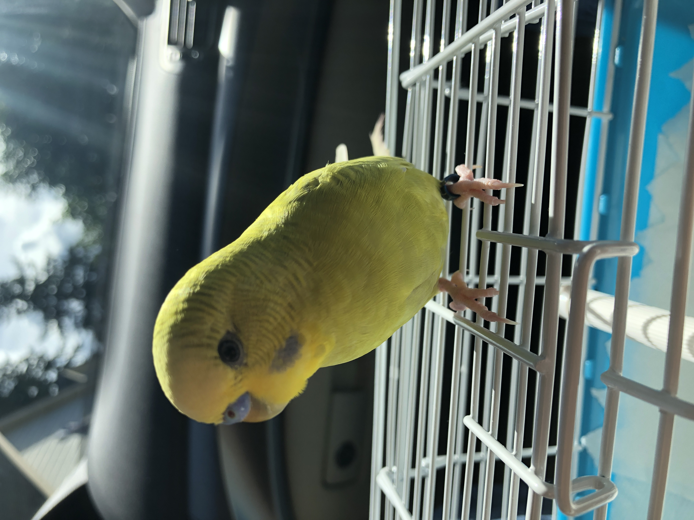

This is my bird Two
He likes crumpled paper and whistling along with me.
I wanted to create something fun that he could be a part of
and my bird basketball project was the final pick of all of
the ideas I had.
The scoreboard would count up whenever Two made a shot in
his basketball hoop. The IR breakbeam sensor would act as
a pushed button to make the scoreboard count. Then, I added
the buzzer as a plus to this project so there would be sound
to celebrate when a shot was made.
View of my scoreboard
Overall view of my circuits
Alternative angle
Top-view
Credit to the weekly slides and the following links
https://www.youtube.com/watch?v=1cg9mXA2XRE
https://www.youtube.com/watch?v=7YZzrtj4zUU
https://bgsu.instructure.com/courses/1157282/pages/tutorial-passive-buzzer
Picture of my schematic & calculations.
I used a 10k potentiometer for my LCD display because I am able to adjust the screen lighting
with the nob rather than switching out resistors when I want it to be brighter. For the passive
buzzer, I realized that adding a resistor would only make it quieter and would generally take
16mA at 3.3V. With that said, it was reccomended in the tutorials I found to not use a resistor
and the tutorial did not have a resistor for the buzzer.